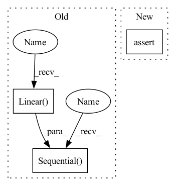

Pattern ID :26866
Before Change
self.use_bottleneck = use_bottleneck
self.num_classes = num_classes
if self.use_bottleneck:
self.bottleneck = nn.Sequential(
nn .Linear( backbone.out_features, bottleneck_dim) ,
nn.BatchNorm1d(bottleneck_dim)
)
self.fc = nn.Linear(bottleneck_dim, num_classes)
else:
self.bottleneck = nn.Identity()
self.fc = nn.Linear(backbone.out_features, num_classes)After Change
self.fc = nn.Linear(backbone.out_features, num_classes)
else:
self.bottleneck = bottleneck
assert bottleneck_dim > 0
self.fc = nn.Linear(bottleneck_dim, num_classes)
@propertyIn pattern: SUPERPATTERN
Frequency: 4
Non-data size: 3
Instances Fragment ID: 80215236
Project Name: thuml/transfer-learning-library
Commit Name: 713af92b72996eb5ef8ab3e85072a2f06e186050
Time: 2020-02-29
Author: JiangJunguang1123@outlook.com
File Name: dalib/models/classifier.py
M Class Name: Classifier
N Class Name: Classifier
M Method Name: __init__(5)
N Method Name: __init__(5)
M Parent Class: nn.Module
N Parent Class: nn.Module
M File Name: dalib/models/classifier.py
N File Name: dalib/models/classifier.py
M Start Line: 29
M End Line: 39
N Start Line: 32
N End Line: 37
Before Change
// create small network that will take features as input
// TODO: got to figure out what is input size
self.addon_nn = nn.Sequential(
nn.Linear( feat_size, 4096) ,
nn.ReLU(),
nn.Linear(4096, 4096),
nn.ReLU(),
nn.Linear(4096, num_classes))
def forward(self, x: torch.Tensor) -> torch.Tensor:
// pass through the original network up to the penultimate layerAfter Change
def __init__(self, model:Network, num_classes:int=10, stack_num=1)->None:
super(AddonNN, self).__init__()
assert stack_num in set((1,2,3))
self.FEAT_SIZE = {1: 32768, 2: 16384, 3: 32768}
Fragment ID: 80215234
Project Name: microsoft/archai
Commit Name: 16a8b37ef55c82318b3c89402322a1a36f063113
Time: 2022-12-16
Author: dedey@microsoft.com
File Name: archai/algos/proxynas/addon_nn.py
M Class Name: AddonNN
N Class Name: AddonNN
M Method Name: __init__(4)
N Method Name: __init__(4)
M Parent Class: nn.Module
N Parent Class: nn.Module
M File Name: archai/algos/proxynas/addon_nn.py
N File Name: archai/algos/proxynas/addon_nn.py
M Start Line: 12
M End Line: 29
N Start Line: 8
N End Line: 23
Before Change
self.use_embedding = exists(context_embedding_features)
self.to_time_embedding = (
nn.Sequential(
nn.SiLU(),
nn.Linear(
in_features=context_time_features, out_features=out_channels * 2
),
)
if exists(context_time_features)
else None
)
After Change
)
if self.use_mapping:
assert exists(context_mapping_features)
self.to_scale_shift = MappingToScaleShift(
features=context_mapping_features, channels=out_channels
) Fragment ID: 80215232
Project Name: archinetai/audio-diffusion-pytorch
Commit Name: 3c710edf168da06dcc89c23ef12023d0f8b63043
Time: 2022-09-21
Author: flavio.schneider.97@gmail.com
File Name: audio_diffusion_pytorch/modules.py
M Class Name: ResnetBlock1d
N Class Name: ResnetBlock1d
M Method Name: __init__(0)
N Method Name: __init__(0)
M Parent Class: nn.Module
N Parent Class: nn.Module
M File Name: audio_diffusion_pytorch/modules.py
N File Name: audio_diffusion_pytorch/modules.py
M Start Line: 167
M End Line: 176
N Start Line: 147
N End Line: 163
Before Change
self.pool = pool
self.to_latent = nn.Identity()
self.mlp_head = nn.Sequential( nn.LayerNorm(dim), nn.Linear( dim, num_classes))
def forward(self, img):
x = self.to_patch_embedding(img)
b, n, _ = x.shapeAfter Change
num_patches = (image_height // patch_height) * (image_width // patch_width)
patch_dim = channels * patch_height * patch_width
assert pool in {"cls", "mean"}, "pool type must be either cls (cls token) or mean (mean pooling)"
self.to_patch_embedding = nn.Sequential(
Rearrange("b c (h p1) (w p2) -> b (h w) (p1 p2 c)", p1 = patch_height, p2 = patch_width), Fragment ID: 80215240
Project Name: rl-vig/libfewshot
Commit Name: c1d09286489c7ba5633890a220bd33eebbbc6f04
Time: 2021-12-12
Author: yangcedrus@gmail.com
File Name: core/model/backbone/vit.py
M Class Name: ViT
N Class Name: ViT
M Method Name: __init__(1)
N Method Name: __init__(13)
M Parent Class: nn.Module
N Parent Class: nn.Module
M File Name: core/model/backbone/vit.py
N File Name: core/model/backbone/vit.py
M Start Line: 112
M End Line: 148
N Start Line: 83
N End Line: 91